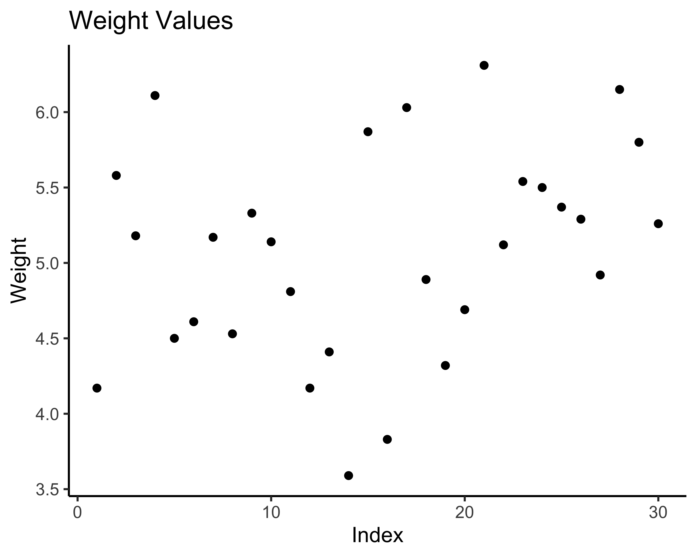
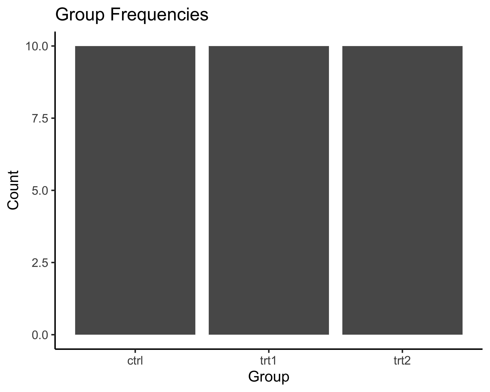
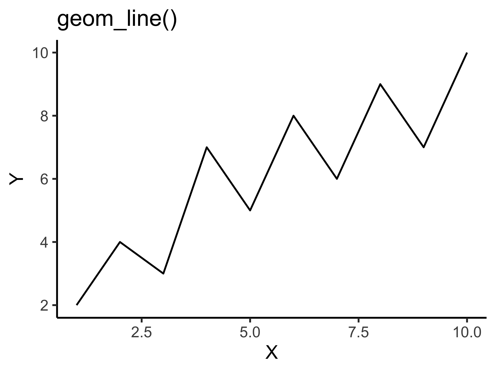
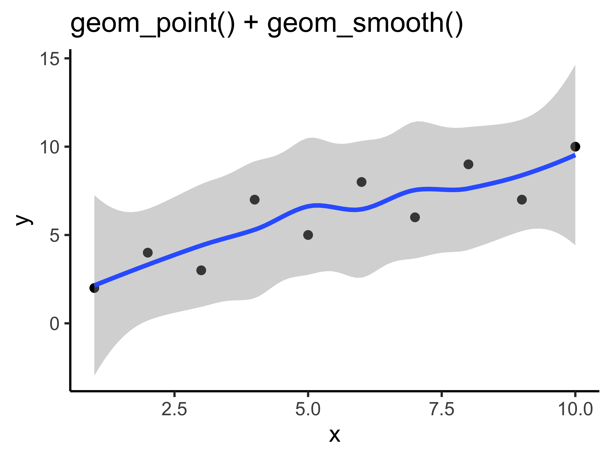
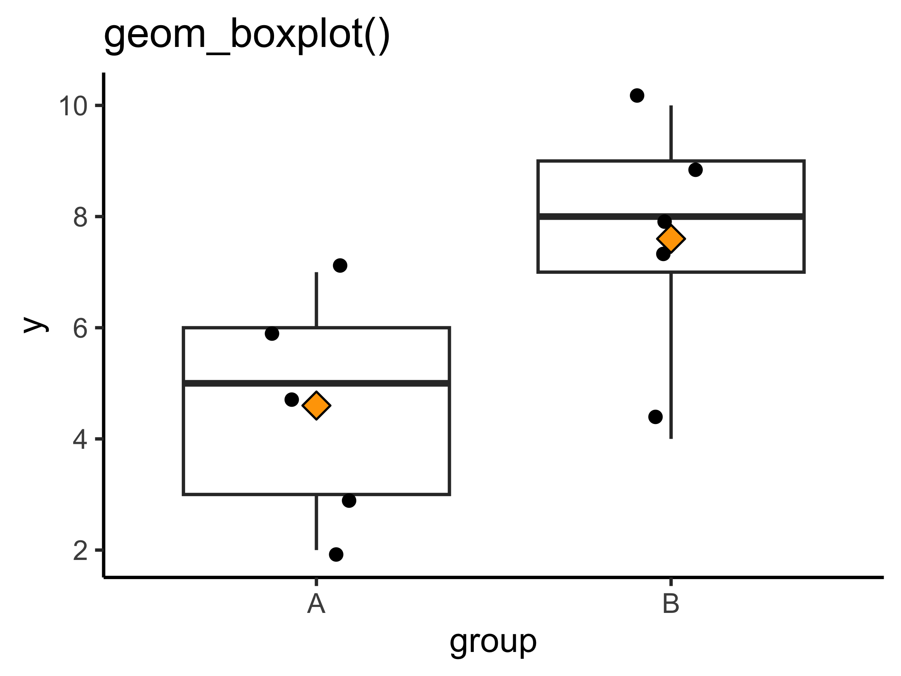
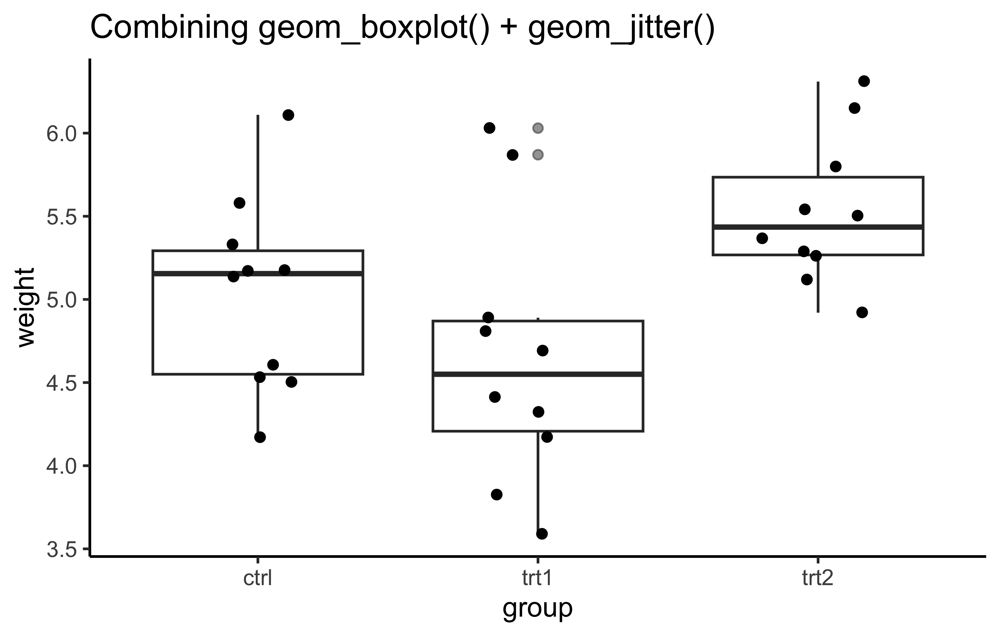
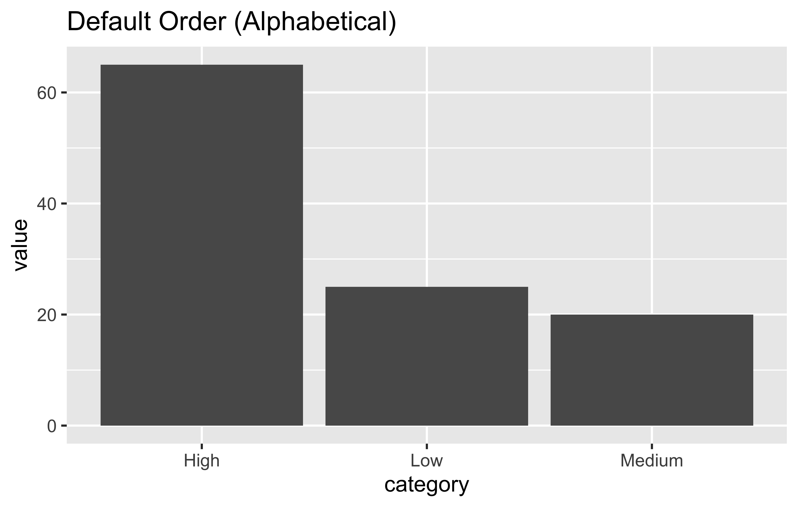
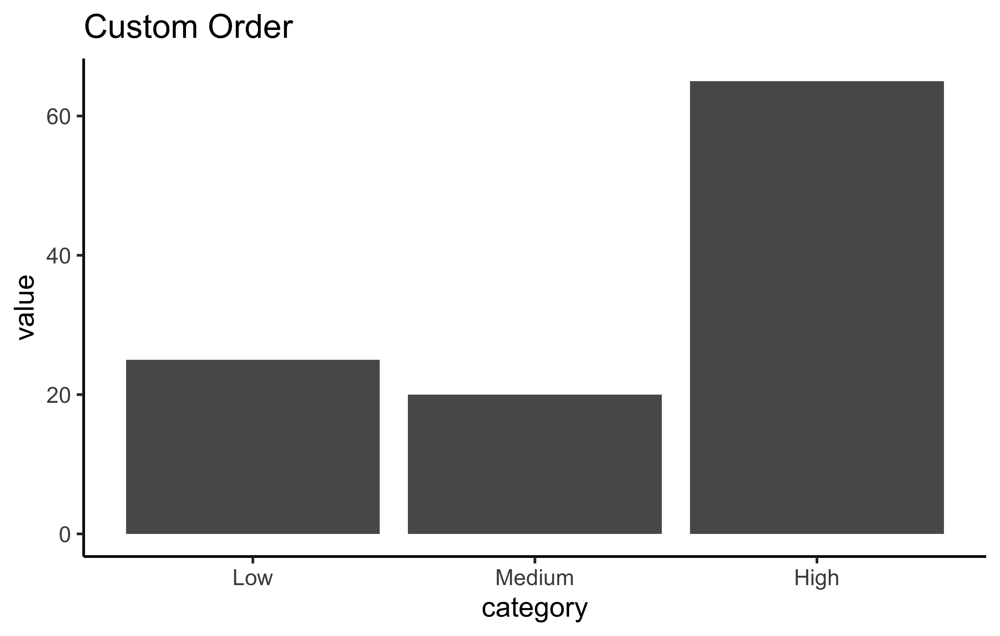

# Install pacman if you haven't already
#install.packages("pacman")
# Load pacman
library(pacman)
# Now use pacman to install and load tidyverse
#pacman::p_load(tidyverse)
# (install &) load packages
pacman::p_load(
broom,
conflicted,
here,
janitor,
naniar,
readxl,
tibble,
tidyverse
)
# Alternative: traditional installation
# install.packages("tidyverse")
# library(tidyverse)
conflicts_prefer(dplyr::filter)
conflicts_prefer(dplyr::select)
#dplyr::select()The tidyverse
Content summary
Pipe (%>%), Tibbles, dplyr-verbs, long/wide format and more.
What is the Tidyverse?
The tidyverse is a collection of R packages designed to make data science easier and more intuitive. Think of it as a toolkit where all the tools work well together and share a similar design philosophy. The packages help you:
- Import data
- Clean and organize data
- Transform and manipulate data
- Visualize data
- Model data
Installing Tidyverse
Before we can use the tidyverse, we need to install it. First, let’s install a helpful package manager called pacman:
Core Tidyverse Packages
Here are the main packages you’ll use most often:
| Package | Purpose |
|---|---|
|
|
Creating beautiful graphs |
|
|
Data manipulation |
|
|
Modern data frames |
|
|
Tidying data |
|
|
Reading data files |
Understanding Data Tables: Base R vs Tidyverse
Base R: data.frame
In base R, we work with data.frame objects. Let’s look at a built-in dataset:
# Base R approach
# Load the built-in PlantGrowth dataset
data(PlantGrowth)
#data(iris)
# Create a copy to work with
df <- PlantGrowth
# View the first few rows
head(df) weight group
1 4.17 ctrl
2 5.58 ctrl
3 5.18 ctrl
4 6.11 ctrl
5 4.50 ctrl
6 4.61 ctrl# Check the structure
str(df)'data.frame': 30 obs. of 2 variables:
$ weight: num 4.17 5.58 5.18 6.11 4.5 4.61 5.17 4.53 5.33 5.14 ...
$ group : Factor w/ 3 levels "ctrl","trt1",..: 1 1 1 1 1 1 1 1 1 1 ...# Get summary statistics
summary(df) weight group
Min. :3.590 ctrl:10
1st Qu.:4.550 trt1:10
Median :5.155 trt2:10
Mean :5.073
3rd Qu.:5.530
Max. :6.310 Accessing columns in Base R:
# Method 1: Using $ notation
df$weight [1] 4.17 5.58 5.18 6.11 4.50 4.61 5.17 4.53 5.33 5.14 4.81 4.17 4.41 3.59 5.87
[16] 3.83 6.03 4.89 4.32 4.69 6.31 5.12 5.54 5.50 5.37 5.29 4.92 6.15 5.80 5.26# Method 2: Using brackets with column name
df[, "weight"] [1] 4.17 5.58 5.18 6.11 4.50 4.61 5.17 4.53 5.33 5.14 4.81 4.17 4.41 3.59 5.87
[16] 3.83 6.03 4.89 4.32 4.69 6.31 5.12 5.54 5.50 5.37 5.29 4.92 6.15 5.80 5.26# Method 3: Using brackets with column number
df[, 1] [1] 4.17 5.58 5.18 6.11 4.50 4.61 5.17 4.53 5.33 5.14 4.81 4.17 4.41 3.59 5.87
[16] 3.83 6.03 4.89 4.32 4.69 6.31 5.12 5.54 5.50 5.37 5.29 4.92 6.15 5.80 5.26Tidyverse: tibble
Now let’s see how tidyverse handles the same data:
# Convert to tibble
tbl <- as_tibble(df)
# View the tibble
tbl# A tibble: 30 × 2
weight group
<dbl> <fct>
1 4.17 ctrl
2 5.58 ctrl
3 5.18 ctrl
4 6.11 ctrl
5 4.5 ctrl
6 4.61 ctrl
7 5.17 ctrl
8 4.53 ctrl
9 5.33 ctrl
10 5.14 ctrl
# ℹ 20 more rowsKey differences with tibbles:
- Better printing: Only shows what fits on screen
- Type information: Shows data types under column names
- No partial matching: More predictable behavior
- Preserves data types: Doesn’t automatically convert strings to factors
Accessing columns in tidyverse:
# Still can use $ notation
tbl$weight [1] 4.17 5.58 5.18 6.11 4.50 4.61 5.17 4.53 5.33 5.14 4.81 4.17 4.41 3.59 5.87
[16] 3.83 6.03 4.89 4.32 4.69 6.31 5.12 5.54 5.50 5.37 5.29 4.92 6.15 5.80 5.26# Or use select() function (we'll learn more about this)
tbl %>% select(weight)# A tibble: 30 × 1
weight
<dbl>
1 4.17
2 5.58
3 5.18
4 6.11
5 4.5
6 4.61
7 5.17
8 4.53
9 5.33
10 5.14
# ℹ 20 more rowsCreating Plots: Base R vs ggplot2
Base R Plotting
Base R has simple plotting functions that are quick but limited:
ggplot2 (Tidyverse)
ggplot2 builds plots in layers, like creating a painting. Let’s break it down:
Understanding ggplot2 basics:
- ggplot() - Creates the canvas
- aes() - Stands for “aesthetics” - tells ggplot which data to use
- + - Adds layers to your plot (like adding paint to canvas)
- **geom_*()** - Geometric objects (the actual marks on the plot)
Let’s build our plots step by step:
# Scatter plot with index
# Step 1: Create the canvas and specify the data
# aes(x = ..., y = ...) maps data to x and y axes
ggplot(data = tbl, aes(x = 1:nrow(tbl), y = weight)) +
# Step 2: Add points to the plot
geom_point() +
# Step 3: Add labels
labs(title = "Weight Values",
x = "Index",
y = "Weight") +
theme_classic()
# Bar plot
# Step 1: Create canvas with data mapping
# When we only specify x, ggplot counts occurrences
ggplot(data = tbl, aes(x = group)) +
# Step 2: Add bars (geom_bar counts automatically)
geom_bar() +
# Step 3: Add descriptive labels
labs(title = "Group Frequencies",
x = "Group",
y = "Count") +
theme_classic()

Breaking down the code:
For the scatter plot:
- ggplot(data = tbl, ...) - Use the ‘tbl’ dataset
- aes(x = 1:nrow(tbl), y = weight) - Put row numbers on x-axis, weight values on y-axis
- geom_point() - Draw points at each (x,y) coordinate
- The + sign connects these layers together
For the bar plot:
- aes(x = group) - Put group categories on x-axis
- geom_bar() - Count how many times each group appears and draw bars
- ggplot automatically counts for us!
Think of it like a recipe:
- Start with your data (ggplot + data)
- Decide what goes where (aes)
- Choose how to show it (geom_point, geom_bar, etc.)
- Add finishing touches (labs, themes, colors)
Common geom_ functions and how to explore more:
Here are the most common geometric layers you’ll use:
Essential geom_ functions:
| geom_ function | What it draws | When to use |
|---|---|---|
geom_point() |
Points/dots | Scatter plots, showing individual values |
geom_line() |
Lines connecting points | Time series, trends |
geom_bar() |
Bars (counts data) | Frequency of categories |
geom_col() |
Bars (uses y values) | When you already have heights |
geom_histogram() |
Histogram | Distribution of continuous data |
geom_boxplot() |
Box plots | Comparing distributions between groups |
geom_smooth() |
Trend lines | Adding regression/smooth lines |
Quick examples:
# Line plot
ggplot(demo_data, aes(x = x, y = y)) +
geom_line() +
labs(title = "geom_line()",
x = "X",
y = "Y") +
theme_classic()
# Points + smooth line
ggplot(data = demo_data, aes(x = x, y = y)) +
geom_point() +
geom_smooth() +
labs(title = "geom_point() + geom_smooth()") +
theme_classic()
# Box plot by group
ggplot(demo_data, aes(x = group, y = y)) +
geom_boxplot() +
stat_summary(fun = mean,
geom = "point",
shape = 23,
size = 3,
fill = "orange") +
geom_jitter(width=0.2) +
labs(title = "geom_boxplot()") +
theme_classic()


Use ?pch or ?shape to know more about shapes.
How to discover more geom_ functions:
-
In RStudio: Type
geom_and press TAB to see all available options# Try this in your console: # ggplot(data, aes(x, y)) + geom_[TAB] -
Get help on any function:
# Learn about a specific geom ?geom_violin # See examples example(geom_violin) -
Useful resources:
- ggplot2 cheatsheet - Visual guide to all geoms
- R Graph Gallery - Examples of every plot type
- ggplot2 documentation - Official reference
- from Data to Viz - Has robust way to show plotting options
-
Experiment! Try different geoms with your data:
# Start with basic plot p <- ggplot(tbl, aes(x = group, y = weight)) # Try different visualizations p + geom_boxplot() # Box plot p + geom_violin() # Violin plot p + geom_jitter() # Scattered points p + geom_dotplot(binaxis = "y") # Dot plot
Pro tip: Layer multiple geoms!
# You can combine multiple geoms for rich visualizations
ggplot(tbl, aes(x = group, y = weight)) +
geom_boxplot(alpha = 0.5) + # Semi-transparent box plot
geom_jitter(width = 0.2) + # Add individual points
labs(title = "Combining geom_boxplot() + geom_jitter()") +
theme_classic()
The Magic of the Pipe (%>%) Operator
The pipe operator is one of the most powerful features in tidyverse. It makes your code readable by allowing you to chain operations together. It takes the output of the expression on its left and passes it as the first argument to the function on its right
Without pipes (Base R approach):
# Step 1: Get ctrl group only
ctrl_only <- df[df$group == "ctrl", ]
# Step 2: Extract weight values
weights <- ctrl_only$weight
# Step 3: Calculate square root
sqrt_weights <- sqrt(weights)
# Step 4: Round to 1 decimal
rounded <- round(sqrt_weights, 2)
# Step 5: Sort
sorted <- sort(rounded, decreasing = TRUE)
sorted [1] 2.47 2.36 2.31 2.28 2.27 2.27 2.15 2.13 2.12 2.04With pipes (Tidyverse approach):
df %>%
filter(group == "ctrl") %>% # Step 1: Get ctrl group
pull(weight) %>% # Step 2: Extract weights
sqrt() %>% # Step 3: Square root
round(1) %>% # Step 4: Round
sort(decreasing = TRUE) # Step 5: Sort [1] 2.5 2.4 2.3 2.3 2.3 2.3 2.1 2.1 2.1 2.0Tip: To type %>% quickly in RStudio, use Ctrl+Shift+M (Windows/Linux) or Cmd+Shift+M (Mac)
Essential dplyr Functions
1. mutate() - Add or modify columns
Base R approach:
# Add a new column
df_copy <- df
df_copy$weight_kg <- df_copy$weight / 1000
# Modify existing column
df_copy$weight <- df_copy$weight * 2
head(df_copy) weight group weight_kg
1 8.34 ctrl 0.00417
2 11.16 ctrl 0.00558
3 10.36 ctrl 0.00518
4 12.22 ctrl 0.00611
5 9.00 ctrl 0.00450
6 9.22 ctrl 0.00461Tidyverse approach:
tbl %>%
mutate(
weight_kg = weight/1000, # Add new column
weight = weight*2
) %>%
head()# A tibble: 6 × 3
weight group weight_kg
<dbl> <fct> <dbl>
1 8.34 ctrl 0.00417
2 11.2 ctrl 0.00558
3 10.4 ctrl 0.00518
4 12.2 ctrl 0.00611
5 9 ctrl 0.0045
6 9.22 ctrl 0.00461N.B. We could make the doubling operation on the same weight column as well. It would make in-place modification. You have to think when to do that operation then.
2. select() - Choose columns
Base R approach:
Tidyverse approach:
tbl <- tbl %>%
select(group, weight)N.B. select() helps to rearrange columns as well.
3. filter() - Choose rows
Base R approach:
# Filter for weight > 5
df_filtered <- df[df$weight > 5, ]
df_filtered weight group
2 5.58 ctrl
3 5.18 ctrl
4 6.11 ctrl
7 5.17 ctrl
9 5.33 ctrl
10 5.14 ctrl
15 5.87 trt1
17 6.03 trt1
21 6.31 trt2
22 5.12 trt2
23 5.54 trt2
24 5.50 trt2
25 5.37 trt2
26 5.29 trt2
28 6.15 trt2
29 5.80 trt2
30 5.26 trt2Tidyverse approach:
tbl %>%
filter(weight > 5)# A tibble: 17 × 2
group weight
<fct> <dbl>
1 ctrl 5.58
2 ctrl 5.18
3 ctrl 6.11
4 ctrl 5.17
5 ctrl 5.33
6 ctrl 5.14
7 trt1 5.87
8 trt1 6.03
9 trt2 6.31
10 trt2 5.12
11 trt2 5.54
12 trt2 5.5
13 trt2 5.37
14 trt2 5.29
15 trt2 6.15
16 trt2 5.8
17 trt2 5.264. arrange() - Sort rows
Base R approach:
weight group
14 3.59 trt1
16 3.83 trt1
1 4.17 ctrl
12 4.17 trt1
19 4.32 trt1
13 4.41 trt1df_sorted <- df[order(df$weight, decreasing=TRUE), ]Tidyverse approach:
tbl %>%
arrange(weight)# A tibble: 30 × 2
group weight
<fct> <dbl>
1 trt1 3.59
2 trt1 3.83
3 ctrl 4.17
4 trt1 4.17
5 trt1 4.32
6 trt1 4.41
7 ctrl 4.5
8 ctrl 4.53
9 ctrl 4.61
10 trt1 4.69
# ℹ 20 more rows5. summarise() with group_by() - Calculate summaries
Base R approach:
# Calculate mean by group
aggregate(weight ~ group, data = df, FUN = mean) group weight
1 ctrl 5.032
2 trt1 4.661
3 trt2 5.526Tidyverse approach:
Working with Data Formats: Long vs Wide
Sometimes you need to reshape your data. Here’s how:
Creating example data:
# Create a small dataset
long_data <- data.frame(
student = c("Alice", "Alice", "Alice", "Bob", "Bob", "Bob"),
test = c("Math", "English", "Chemistry", "Math", "English", "Chemistry"),
score = c(85, 90, 78, 82, 78, 90)
)
long_data student test score
1 Alice Math 85
2 Alice English 90
3 Alice Chemistry 78
4 Bob Math 82
5 Bob English 78
6 Bob Chemistry 90Convert to wide format:
Base R approach:
# Using reshape function
wide_base <- reshape(long_data,
idvar = "student",
timevar = "test",
direction = "wide")
wide_base student score.Math score.English score.Chemistry
1 Alice 85 90 78
4 Bob 82 78 90Tidyverse approach:
wide_data <- long_data %>%
pivot_wider(names_from = test,
values_from = score)
wide_data# A tibble: 2 × 4
student Math English Chemistry
<chr> <dbl> <dbl> <dbl>
1 Alice 85 90 78
2 Bob 82 78 90Convert back to long format:
Tidyverse approach:
wide_data %>%
pivot_longer(cols = -student,
names_to = "test",
values_to = "score")# A tibble: 6 × 3
student test score
<chr> <chr> <dbl>
1 Alice Math 85
2 Alice English 90
3 Alice Chemistry 78
4 Bob Math 82
5 Bob English 78
6 Bob Chemistry 90Working with Factors (forcats)
Factors are categorical variables. The order matters for plotting:
# Create example data
plot_data <- tibble(
category = c("Low", "Medium", "High", "Low", "High"),
value = c(10, 20, 30, 15, 35)
)
# Default alphabetical order
ggplot(plot_data, aes(x = category, y = value)) +
geom_col() +
labs(title = "Default Order (Alphabetical)")
Reordering factors:
# Specify custom order
plot_data %>%
mutate(category = fct_relevel(category, "Low", "Medium", "High")) %>%
ggplot(aes(x = category, y = value)) +
geom_col() +
labs(title = "Custom Order") +
theme_classic()
Working with Strings (stringr)
Common string operations:
# Example strings
messy_string <- " Hello World! "
names <- c("John Smith", "Jane Doe", "Bob Johnson")
# Remove extra spaces
str_trim(messy_string)[1] "Hello World!"str_squish(messy_string)[1] "Hello World!"# Replace text
str_replace(names, "John", "Jonathan")[1] "Jonathan Smith" "Jane Doe" "Bob Jonathanson"# Detect pattern
str_detect(names, "John")[1] TRUE FALSE TRUE# Extract substring
str_sub(names, 1, 4)[1] "John" "Jane" "Bob "Practical Example: Complete Analysis
Let’s combine everything we learned:
# Load and prepare data
mtcars %>%
as_tibble() %>%
# Add car names as a column
mutate(car = rownames(mtcars)) %>%
# Select relevant columns
select(car, mpg, cyl, hp, wt) %>%
# Filter for efficient cars
filter(mpg > 20) %>%
# Add categorical variable
mutate(efficiency = case_when(
mpg > 30 ~ "High",
mpg > 25 ~ "Medium",
TRUE ~ "Low"
)) %>%
# Sort by mpg
arrange(desc(mpg)) %>%
# Show top 5
head(5)# A tibble: 5 × 6
car mpg cyl hp wt efficiency
<chr> <dbl> <dbl> <dbl> <dbl> <chr>
1 Toyota Corolla 33.9 4 65 1.84 High
2 Fiat 128 32.4 4 66 2.2 High
3 Honda Civic 30.4 4 52 1.62 High
4 Lotus Europa 30.4 4 113 1.51 High
5 Fiat X1-9 27.3 4 66 1.94 Medium Summary: Base R vs Tidyverse
| Task | Base R | Tidyverse |
|---|---|---|
| Select columns | df[, c("col1", "col2")] |
df %>% select(col1, col2) |
| Filter rows | df[df$col > 5, ] |
df %>% filter(col > 5) |
| Add column | df$new <- df$old * 2 |
df %>% mutate(new = old * 2) |
| Sort | df[order(df$col), ] |
df %>% arrange(col) |
| Group summary | aggregate() |
df %>% group_by() %>% summarise() |
Homework Assignment
Part 1: Basic Operations
Using the built-in iris dataset:
Plotting Challenge:
Create a visualization that shows the relationship between Petal.Length and Petal.Width, colored by Species, with: - Proper labels and title - A theme of your choice - Regression lines for each species
And try more plotting as you wish!
Problem 1: Data Manipulation
Using the built-in iris dataset:
1. Convert it to a tibble
2. Create a new column called Petal.Ratio that is Petal.Length / Petal.Width
3. Filter for only “setosa” species with Sepal.Length > 5
4. Select only the Species, Sepal.Length, and your new Petal.Ratio columns
5. Arrange the results by Petal.Ratio in descending order
Problem 2: Grouping and Summarizing
Using the full iris dataset:
- Group by Species
- Calculate the following for each species:
- Mean Sepal.Length
- Standard deviation of Sepal.Width
- Minimum and maximum Petal.Length
- Count of observations
- Create a bar plot showing the mean Sepal.Length by Species
Problem 3: Data Reshaping
- Create a subset of iris with the first 3 rows of each species
- Add a row number within each species (call it “plant_id”)
- Convert this to wide format where:
- Each row represents one plant_id
- Columns show the Sepal.Length for each species
Submission Instructions:
- Submit your R Markdown file
- Include comments explaining your code, discuss with your peer and improve
- Make sure your code runs without errors
- Due date: Friday 10PM BD Time
Grading Rubric:
- Code correctness: 70%
- Code style and comments: 20%
- Output interpretation: 10%
Good luck! Remember to use the pipe operator %>% to make your code readable!
Citation
BibTeX citation:
@online{rasheduzzaman2025,
author = {Md Rasheduzzaman},
title = {The Tidyverse},
date = {2025-09-09},
langid = {en},
abstract = {Pipe (\%\textgreater\%), Tibbles, dplyr-verbs, long/wide
format and more.}
}
For attribution, please cite this work as:
Md Rasheduzzaman. 2025. “The Tidyverse.” September 9, 2025.